class: center, middle # The Pragmatic Architecture --- class: center, --- # The goal of software architecture - Easy to understand - Easy to test - Easy to change - Easy to maintain --- # What happens with no architecture? <div style="text-align: center;"> 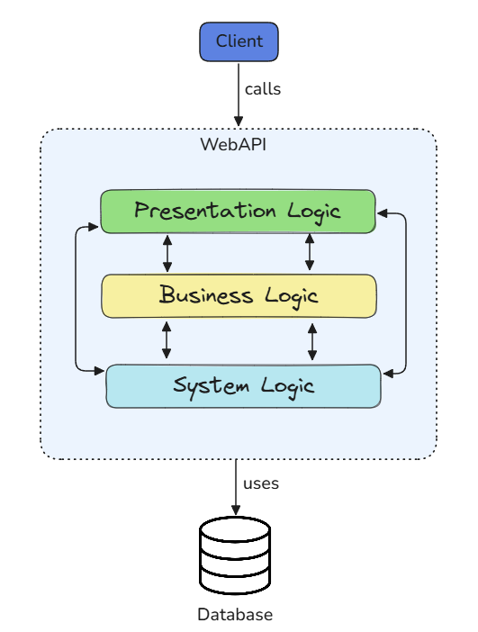 </div> --- # What happens with no architecture? <div style="text-align: center;"> <img src="./assets/spaghetti.jpg" alt="Example Image" style="width:500px;"> </div> --- # What happens with no architecture? <div style="text-align: center;"> 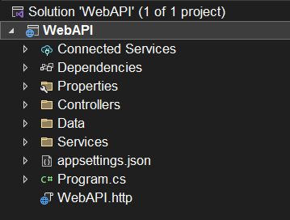 </div> --- # No architecture ✅Pros: - Little to no abstraction - Quick prototypes ❌Cons: - Difficult to test - Difficult to maintain - Difficult for bigger teams - Technology change impacts the whole system --- # Traditional N-tier Layered Architecture <div style="text-align: center;"> 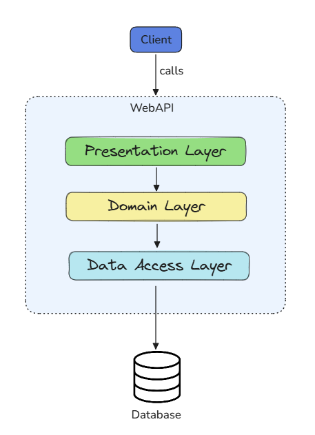 </div> --- # Traditional N-tier Layered Architecture <div style="text-align: center;"> 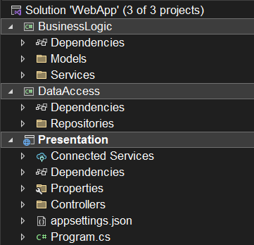 </div> --- # DDD N-tier Layered Architecture <div style="text-align: center;"> 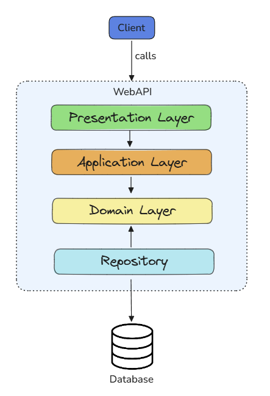 </div> --- # N-tier Layered Architecture ✅Pros: - Better Separation of Concerns - Improved testability ❌Cons: - Increased development time - Difficult to maintain over time - Not ideal for multiple teams --- # Clean Architectures Onion Architecture <div style="text-align: center;"> <img src="./assets/clean-arch1.png" alt="Example Image" style="width:350px;"> </div> --- # Clean Architectures Clean Architecture by Uncle Bob <div style="text-align: center;"> <img src="./assets/clean-arch2.jpg" alt="Example Image" style="width:450px;"> </div> --- # Clean Architectures Hexagonal Architecture <div style="text-align: center;"> 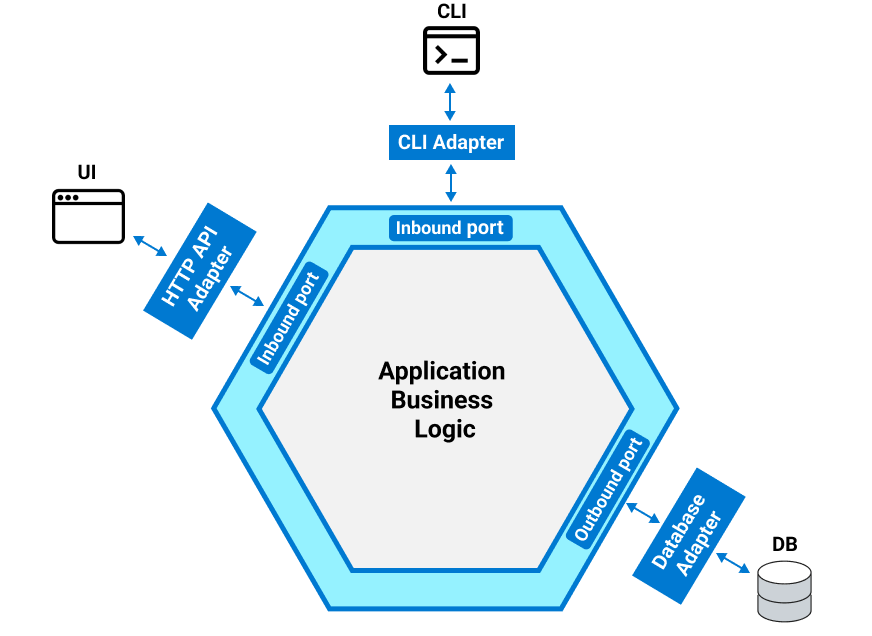 </div> --- # Clean Architectures ✅Pros: - Independent of frameworks - Independent of UI, DB and any external dependencies - Testable ❌Cons: - Too opinionated - too many rules - Organized by technical concerns - Changes involves many layers - slower development time - High entry curve for new developers ??? - high entry curve for developers - to understand functionality, you need to have many files open and jump back and forth --- # ❌ Too many rules Tells you how to write software without knowing the domain. <div style="text-align: center;"> 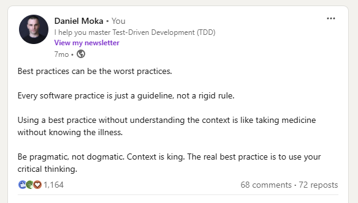 </div> --- # ❌ Organized by technical concerns <div style="text-align: center;"> 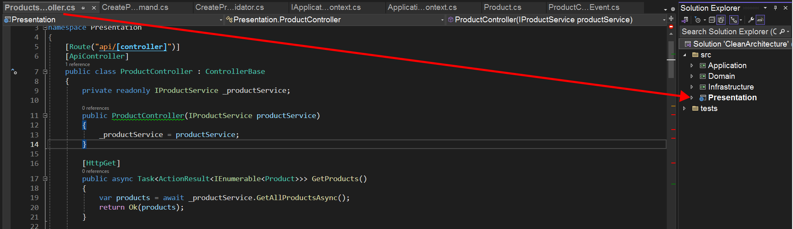 </div> --- # ❌ Organized by technical concerns <div style="text-align: center;"> 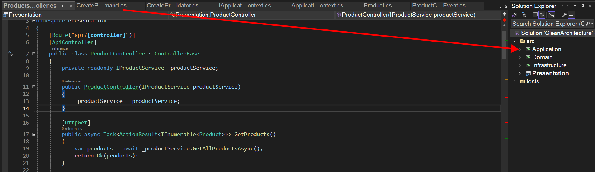 </div> --- # ❌ Organized by technical concerns <div style="text-align: center;"> 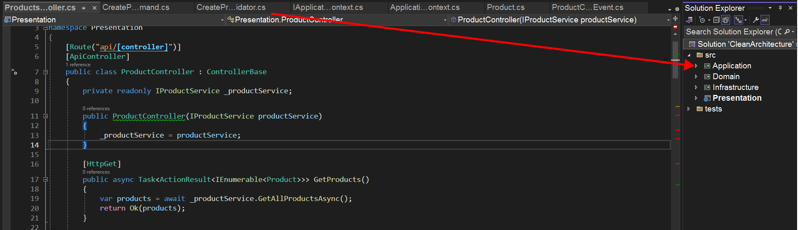 </div> --- # ❌ Organized by technical concerns <div style="text-align: center;"> </div> --- # ❌ Organized by technical concerns <div style="text-align: center;"> 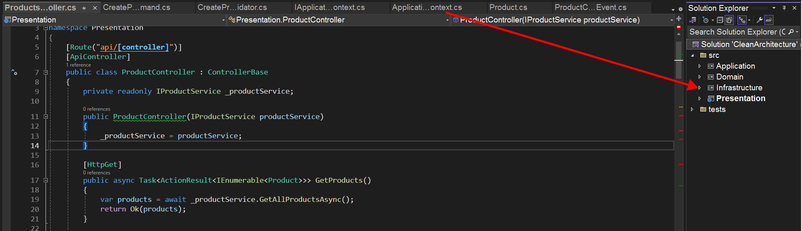 </div> --- # ❌ Organized by technical concerns <div style="text-align: center;"> 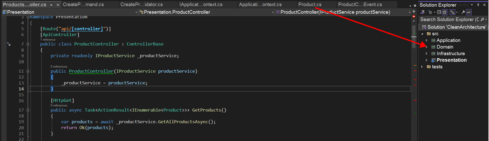 </div> --- # ❌ Organized by technical concerns <div style="text-align: center;"> 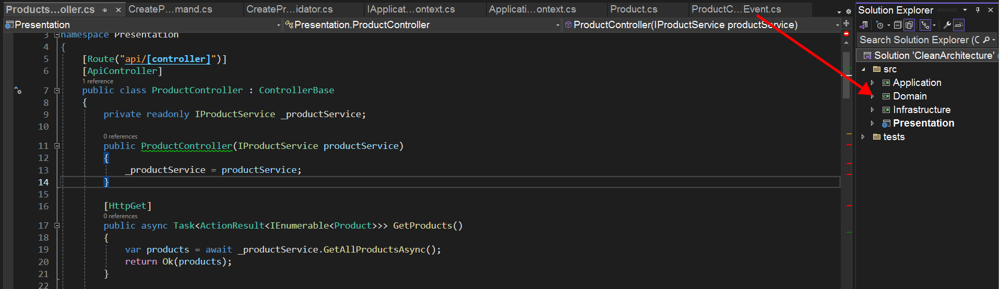 </div> --- # Low coupling, high cohesion Coupling: degree of interdependency between software modules Cohesion: degree to which the elemnets inside a module belong together --- class: center, middle # Does Clean Architecture solve this? --- # ❌ Low coupling? Spider web of calls <div style="text-align: center;"> 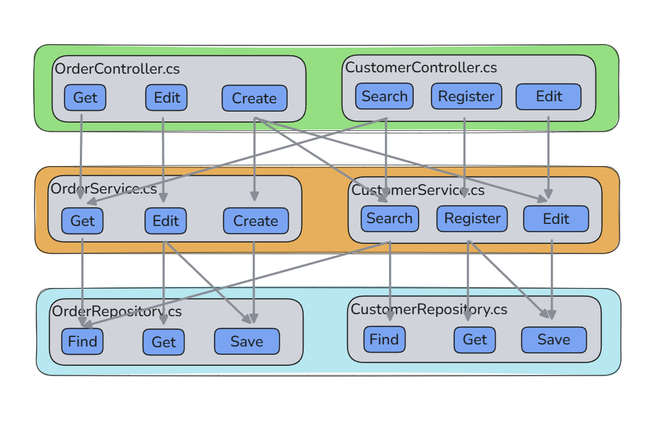 </div> --- #❌ High cohesion? Many areas of change Feature componetns are scattered Too many tabs open --- class: middle, center # Is there a better way??? --- class: middle, center # <span class="green-bg">Vertical Slice Architecture</span> --- # Layers of Clean Architecture <div style="text-align: center;"> </div> --- # Remove technical layers <div style="text-align: center;"> 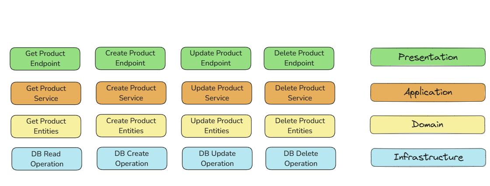 </div> --- # Organize by feature <div style="text-align: center;"> 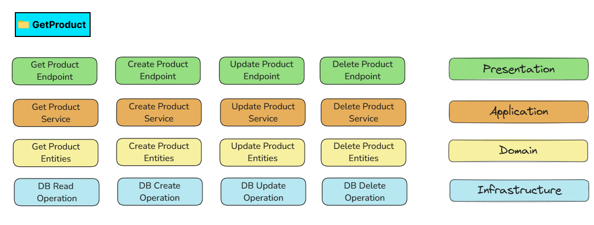 </div> --- # Organize by feature <div style="text-align: center;"> 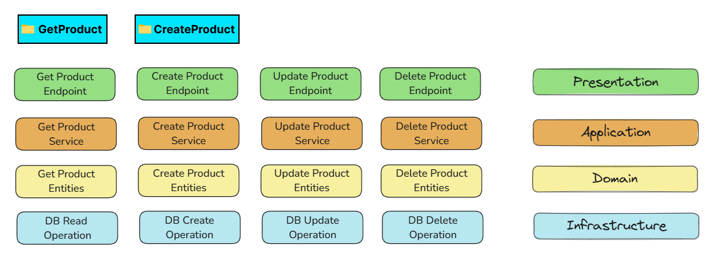 </div> --- # Organize by feature <div style="text-align: center;"> 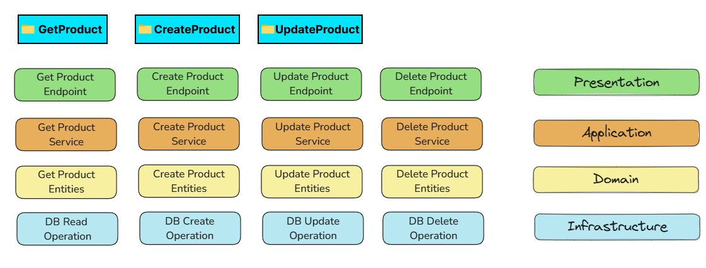 </div> --- # Organize by feature <div style="text-align: center;"> </div> --- # Organize by feature <div style="text-align: center;"> </div> --- # Organize by feature <div style="text-align: center;"> 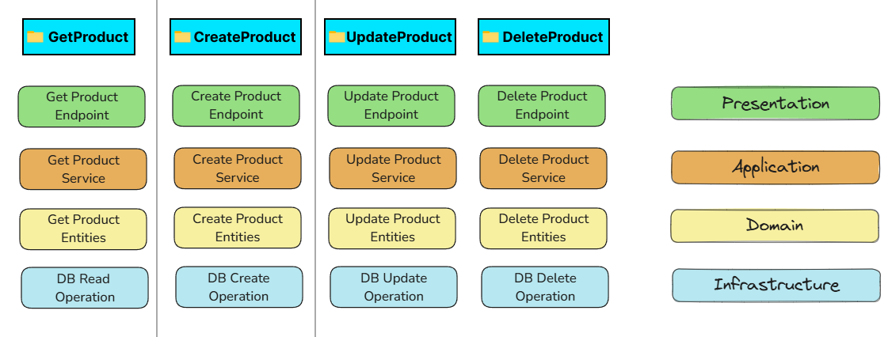 </div> --- # Organize by feature <div style="text-align: center;"> 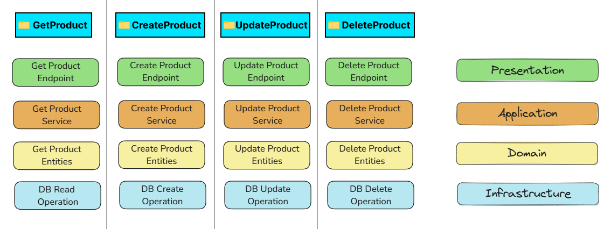 </div> --- # Organize by feature <div style="text-align: center;"> </div> --- # Use only what you need <div style="text-align: center;"> 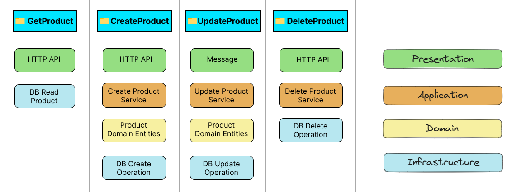 </div> ??? It gives us the freedom to use what we want Architecture does not tell us what to do. Domain drives the design. --- # Logical boundaries Segregated by logical boundaries Sharing still happens! <div style="text-align: center;"> 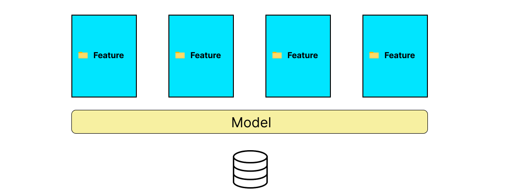 </div> --- # Web App characteriscs <div style="text-align: center;"> 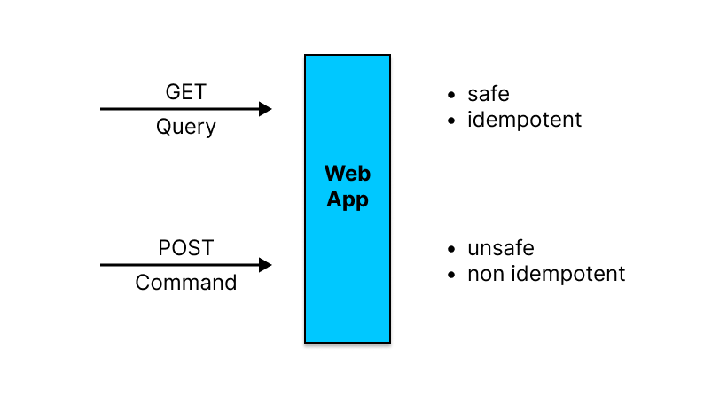 </div> --- # CQRS Command and Query Segregation Principle Two models: read and write Separation of Concerns <div style="text-align: center;"> 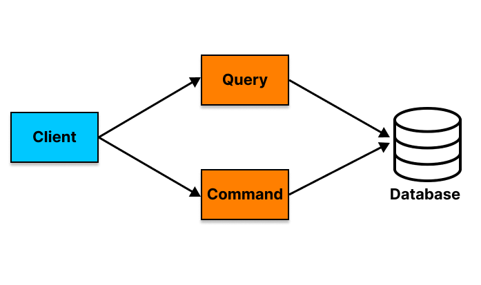 </div> --- # VSA + CQRS Commands and Queries are first class citizens Only way to communicate with the apps Simple Model For Requests <div style="text-align: center;"> 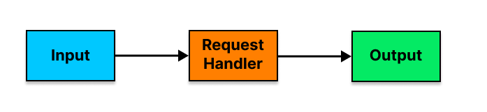 </div> --- # VSA + CQRS <div style="text-align: center;"> 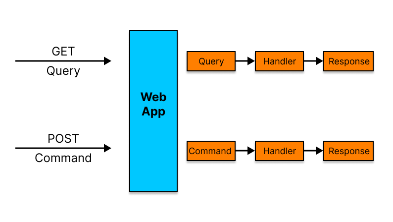 </div> --- class: middle, center # <span class="green-bg">How to do VSA in .NET?</span> --- # Modelling requests in .NET Mediator pattern MediatR library <div style="text-align: center;"> <img src="./assets/mediatr.png" alt="Example Image" style="width:300px;"> </div> ??? The mediator pattern is like a "middle friend" that helps different parts talk to each other without needing to know everyone else. In MediatR, this "middle friend" handles messages (or requests) between parts of your app, so they can talk without directly knowing each other. --- # Modelling requests in .NET <div style="text-align: center;"> 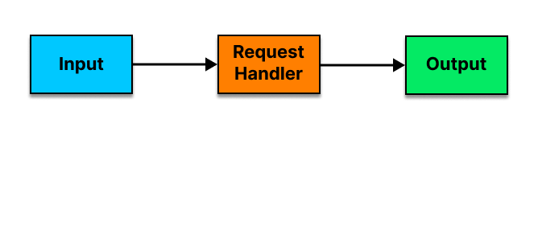 </div> --- # Modelling requests in .NET <div style="text-align: center;"> 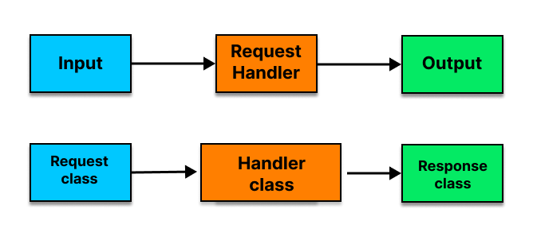 </div> <div style="text-align: center;"> <pre> <code> Task Handle(Query request){...} Task Handle(Command request){...} </code> </pre> </div> --- # Modelling requests in .NET ``` public class GetAllProductsQuery : IRequest<Result<Response>> { } ``` ``` public class GetProductQuery : IRequest<Result<Response>> { public Guid Id { get; set; } } ``` ``` public class SearchForProductsQuery : IRequest<Result<Response>> { public String Name { get; set; } public decimal Price { get; set; } public bool IsOnDiscount { get; set; } } ``` --- # Modelling requests in .NET ``` public class ActivateDiscountsCommand : IRequest<Result<Guid>> { } ``` ``` public class CreateProductCommand : IRequest<Result<Guid>> { public string Name { get; set; } public string Description { get; set; } public decimal Price { get; set; } } ``` --- # Modelling responses in .NET <span class="red-bg">Don't use exceptions for control flow.</span> <span class="green-bg">Exceptions are only for exceptional situations.</span> 2 kinds of errors: - you know how to handle - use result paradigm - you don't know how to handle - use exceptions - catch and handle at the lowerst level # --- # Result paradigm ``` public class Result<T> { private Result(bool isSuccess, T value, Error error) { ... } public bool IsSuccess { get; } public bool IsFailure => !IsSuccess; public T Value { get; } public Error Error { get; } public static Result<T> Success(T value) => new(true, value, Error.None); public static Result<T> Failure(Error error) => new(false, default, error); } ``` --- # Modelling responses in .NET ``` public class GetProductQuery : IRequest<Result<Response>> { public Guid Id { get; set; } } public class Response { public Guid Id { get; set; } public string Name { get; set; } public string Description { get; set; } public decimal Price { get; set; } } ``` --- # How to organize projects? One assembly - one project Multiple if needed for scaling ??? If the deployment sturcutre requires, or multiple applications would use, you can pull out things to separate assemblies. --- # How to organize code Move code to a single physical place <div style="text-align: center;"> <img src="./assets/vsa-move-services.png" alt="Example Image" style="width:700px;"> </div> --- # How to organize all features 📁 Features |__ 📁CarPicker |__ 🗎 ReserveCar.cs |__ 🗎 UnreserveCar.cs |__ 🗎 HoldCar.cs |__ 🗎 ... |__ 📁UserManager |__ 📁PaymentProcessor |__ 📁InvoiceGenerator |__ 📁SupportCenter |__ ... --- # How to organize single feature One class - One file - One folder <div style="text-align: center;"> 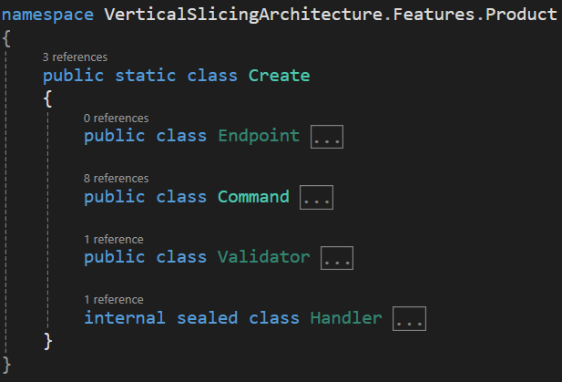 </div> --- class: center, middle # <span class="orange-bg">Why all of this so powerfull?</span> --- # Pragmatism - ✅ Minimal and lean solution - ✅ Guidelines over rigid rules - ✅ Freedom of choice <div style="text-align: center;"> 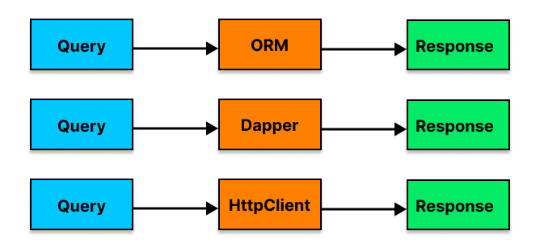 </div> ??? It supports to mindset of a pragmatic engineer menaing ... That is how we want to keep our solutions lean, simple and minimal. Software practices are guidelines not rigid rules. it does not mean that my team members can do whatever they want. but they can use whatever they need the best practice is is to use our critical thinking --- # High cohesion ✅ Everything in one place ✅ Screaming architecture ✅ App is organized by features, not by technical concerns ✅ Focused on business logic --- # How about coupling? ✅ High coupling inside the slice ✅ Low coupling with other features ✅ Reduced complexity -> more confidence ??? high coupling inside slcie is readonable as the things which sh ould change together should live together --- # Code sharing Layered approach: sharing is default Slice approach: sharing is optional <span class="orange-bg">Defer decision, not eliminate it.</span> How to share: - extension methods - refactoring to functions/classes - rich domain model ??? SLices does not mean sharing isn't allowed. It's just it is not the default choice. Whereas in layered approach, sharing means default choice. --- class: center, middle # <span class="red-bg"> That's it? </span> --- class: center, middle # <span class="green-bg">The Ultimate TDD Strategy </span> --- # Two kind of unit tests <div style="text-align: center;"> 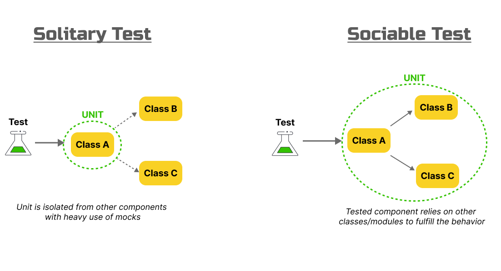 </div> --- class: center, middle # <span class="red-bg">Don't couple your tests to code structure</span> # <span class="green-bg">Couple them to the behaviours of the public APIs</span> ??? dont; coumple your tests to code strucrture, they will be fragile, bla bla --- # Sociable test on WebAPI - Entry point: public API of WebAPI - London mixed with Chicago - State vs interaction verification - Minimizing low-level tests <div style="text-align: center;"> 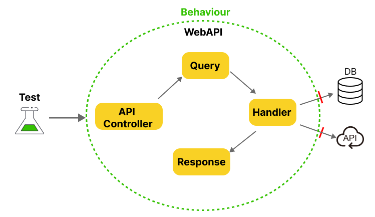 </div> ??? - Exceptions: domain heavy logic or prop tests --- # Tech-agnostic tests <div style="text-align: center;"> </div> --- # Tech-agnostic tests <div style="text-align: center;"> 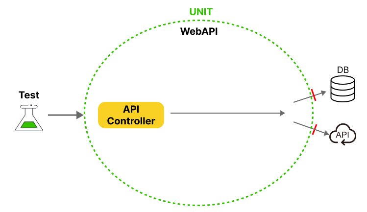 </div> --- # Tech-agnostic tests <div style="text-align: center;"> 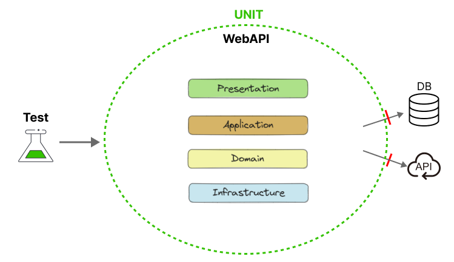 </div> --- # Tech-agnostic tests <div style="text-align: center;"> 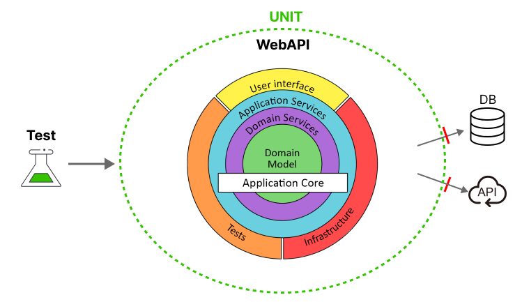 </div> ??? Even if ou have clean architecutr,e dont change it because I said you can do the same, high level tests that's the beauty. I can easiy refactor this code using CleanArchitecture, and tests remain, only there will be some more dependencies for the text context --- # Acceptance Test-Driven Development (ATDD) What the system should do from the user POV Unit tests becomes Acceptance Tests What to test: - What are the observable behaviors? - What are the side effects? - What is the interaction with external systems? ??? TDD has a special form called Acceptance Test-Driven Development (ATDD). Acceptance Tests provide us with a user-focused take on what our system should do. They work alongside technical tests to check how the system behaves from an outside perspective, in real-life scenarious. ATDD is an approach that focuses on building software around its intended purpose and outcomes rather than specific technologies or implementation details. This “outside-in --- When to use Solitary tests? TODO: add when sociable tests can be usefull (but only when we are done with the code) --- TODO: summary Summary: Pragmatic mindset Use what you need, throw away what you don't. Use the abstractions you only need but not one more. - You need an abstraction? Do it Optimize on the fly, instead of being upfront and descriptive what to use. --- TODO: add slides about how about DDD How about DDD? Get what is good: uniquitios language, model distillation, bounded context add jimmys's image Throw away what you dont need: Patterns are good, but not like Add post image: guidelines, not rigid rules DDD is not about sturctural patterns, it is about collaborating closely with domain experts and have a clear understand about what we want to build, then do it in short, Iterative Dont ask the csutoemr what features they want. CROSS CUTTING CONCERNS: pipeline behaviours!!! QUESTION: wher we need UoW? check the a architecture is slices slidesheet - VSA: You only need a new project when you need a new assembly. Everything else should be folder structures and namespaces. If the deployment sturcutre requires, or multiple applications would use, you can pull out things to separate assemblies. Use the abstractions you need but not one more. You need an abstraction? Do it Optimize on the fly, instead of being upfront and descriptive what to use. TODO: - every single slice needs an integration test?! - or we mock out DB, and do contract testing. Either: - Integraion tests - plus domain Or: - sociable test with mocked stuff - integration test MIGRATING FROM CLEAN/N-TIER - defactor if I dont understanding, indline indline ---check the nature -entire team should agree upon, and should have ReadToEndAsync -process with an intended completion, or experiment and roll it back -architecutre should have consistency -make sure the migration compltes, or roll back AVOID SHARED DOMAIN? - nah, it is fine How about extracting DB logic such? Dont create generic sutff like manager, repo expects Make specifif objects like XQuery, or YApprover (instead of YService.Approve()) vids: - jim: https://www.youtube.com/watch?v=oAoaMlS1PWo - mil: https://www.youtube.com/watch?v=msjnfdeDCmo - cop: https://www.youtube.com/watch?v=L2Wnq0ChAIA --- COpin: VSA conclusion: ✅ pragmatic mindset ✅ - TODO: refine this SLices does not mean sharing isn't allowed. It's just it is not the default choice. Whereas in layered approach, sharing means default choice. Defer sharing decision, not eliminate it. Code sharing? - extension methods - refactoring to functions/classes as logic - domain model Coupling here and there is not the end of the world. Readable, testable, team-driven clean code is more important. VSA summary: - functional cohesion - organize by feature - decision by feature we can still have coupling with VSA, but better cohesion. TradeOffs vof VSA: (TODO: find more flaws) - pragmatics over consistency - requires constant evaluation --- --- #<span class="red-bg">Why refactoring is crucial in TDD?</span> ---